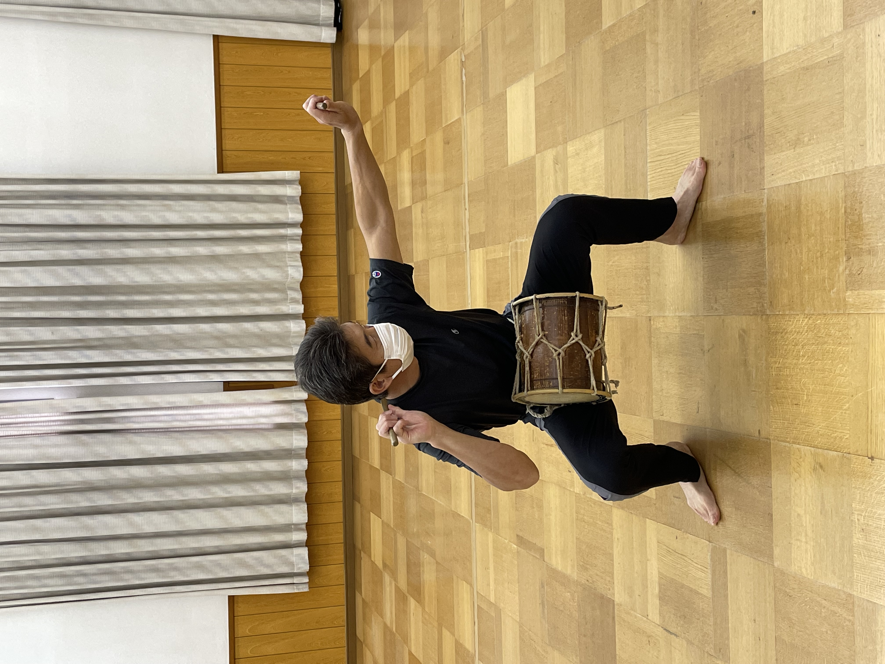
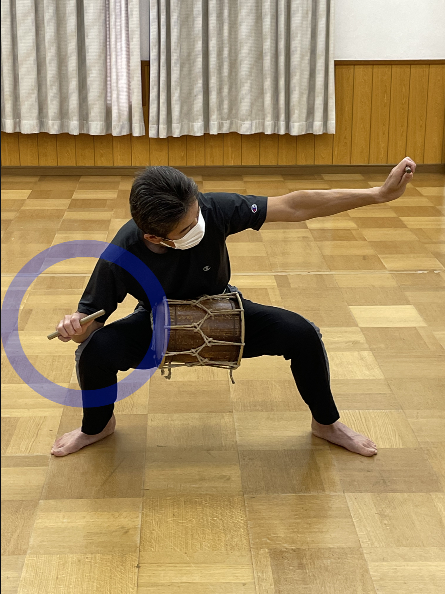

～弓の引き方～
ここでは正しい弓の引き方を良い例、悪い例の写真を用いて解説します。良い例の写真と、3種類の悪い例の写真を見比べてちがいを理解しましょう
良い例

両足を開いて地面につけ、右手を顔のそばにおいて構えているこの時、目線はバチの先を見ている。
悪い例

右手が下がってしまい、顔の側において構えていない。
注目ポイント
たいこをたたいている時のうでのまわす大きさや、かかとに注目して見ましょう